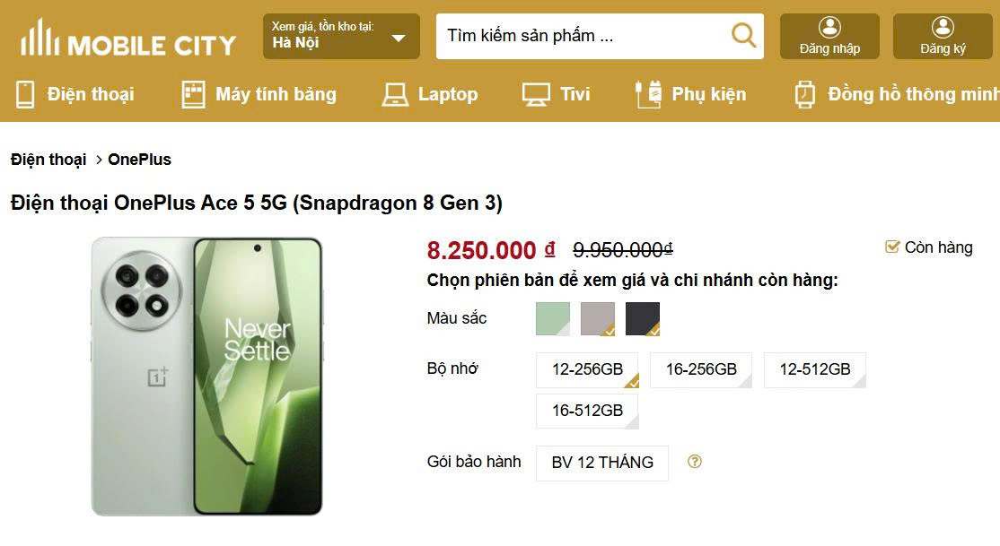

Đánh giá chi tiết OnePlus Ace 5

OnePlus Ace 5 xuất hiện trên thị trường như một lời khẳng định mạnh mẽ của OnePlus về việc quay trở lại phân khúc "sát thủ flagship" – nơi những thiết bị sở hữu cấu hình hàng đầu được bán với mức giá dễ tiếp cận hơn. Mang trong mình DNA hiệu năng cao đặc trưng của OnePlus, Ace 5, với con chip Snapdragon 8 Gen 3 mạnh mẽ, hứa hẹn mang đến những trải nghiệm ấn tượng. Bài đánh giá chi tiết này sẽ đi sâu vào từng khía cạnh của OnePlus Ace 5, từ thiết kế, màn hình, hiệu năng, camera, thời lượng pin, phần mềm cho đến vị thế của nó trên thị trường Việt Nam đầy cạnh tranh, nhằm xác định liệu đây có thực sự là một "flagship killer" đáng gờm.
Sự ra đời của OnePlus Ace 5 không chỉ đơn thuần là việc giới thiệu một sản phẩm mới, mà còn phản ánh một chiến lược rộng lớn hơn của OnePlus nhằm chiếm lĩnh các phân khúc thị trường khác nhau, đặc biệt là nhóm người dùng trẻ, yêu thích công nghệ và hiệu năng cao nhưng có ngân sách vừa phải. Trong khi dòng sản phẩm chính (như OnePlus 12, 13) ngày càng tiến vào phân khúc cao cấp với mức giá tương xứng, dòng Ace, mà Ace 5 là đại diện tiêu biểu, được kỳ vọng sẽ lấp đầy khoảng trống, mang đến sức mạnh gần như tương đương với một mức giá hấp dẫn hơn nhiều. Điều này đặc biệt quan trọng trong bối cảnh thị trường smartphone ngày càng cạnh tranh khốc liệt.
Bảng 1: OnePlus Ace 5 - Thông số kỹ thuật chính
| Tính năng | Thông số kỹ thuật | Nguồn tham khảo |
|---|---|---|
| Màn hình | 6.78 inch LTPO AMOLED, 1.5K (1264x2780 pixels), 120Hz, độ sáng tối đa 4500 nits | [1, 2] |
| Chipset | Qualcomm Snapdragon 8 Gen 3 (4nm) | [1, 2] |
| GPU | Adreno 750 | [1, 2] |
| RAM | 12GB/16GB LPDDR5X | [1, 3] |
| Bộ nhớ trong | 256GB/512GB/1TB UFS 4.0 | [1, 3] |
| Camera sau | Chính 50MP (Sony IMX890, OIS), Siêu rộng 8MP, Macro 2MP | [1, 3] |
| Camera trước | 16MP | [1, 3] |
| Pin | 6415mAh | [1, 2] |
| Sạc | 80W SuperVOOC | [1, 2] |
| Hệ điều hành | Android 15 (ColorOS 15/OxygenOS 15) | [1, 2] |
| Kích thước | 161.7 x 75.8 x 8.1 mm | [1] |
| Trọng lượng | 206g (mặt lưng kính) hoặc 223g (mặt lưng gốm) | [1] |
| Kháng nước, bụi | IP65 | [1, 4] |
Thiết kế và Hoàn thiện: Sang trọng và Thực dụng

OnePlus Ace 5 mang đến một ngôn ngữ thiết kế được mô tả là "tối giản nhưng tinh tế" [2] và "hiện đại" [3], kết hợp giữa vẻ ngoài sang trọng và cảm giác cầm nắm thực dụng. Máy sử dụng khung viền kim loại nhôm nguyên khối, không chỉ tăng cường độ bền mà còn mang lại vẻ ngoài cứng cáp, cao cấp.[1, 2] Mặt lưng là điểm nhấn với hai tùy chọn chất liệu: kính Crystal Shield Glass cho các phiên bản màu Đen (Black) và Xám Titan (Gravity Titanium), hoặc gốm (ceramic) cho phiên bản màu Xanh (Green).[2, 4] Việc sử dụng gốm, một vật liệu thường thấy trên các dòng flagship đắt tiền, cho thấy nỗ lực của OnePlus trong việc nâng tầm trải nghiệm người dùng ngay từ thiết kế bên ngoài.
Về mặt thẩm mỹ, OnePlus Ace 5 sở hữu màn hình phẳng kết hợp với các cạnh viền được làm phẳng, tạo nên một tổng thể hiện đại, bắt kịp xu hướng.[2, 5] Cụm camera tròn lớn phía sau, một thiết kế quen thuộc của OnePlus, giúp tăng khả năng nhận diện thương hiệu một cách rõ ràng.[2, 4] Các tùy chọn màu sắc bao gồm Xám, Trắng và Xanh lá [1], cùng với các phiên bản đặc biệt như Xám Titan và Đen sử dụng kính Crystal Shield, và Xanh lá sử dụng gốm.[2] Một số nguồn tin còn đề cập đến quy trình "Star Track Glass Process" cho phiên bản Xám Titan, tạo hiệu ứng vân sao độc đáo, mang lại cảm giác chạm tinh tế.[4, 6]
Cảm giác cầm nắm và thao tác trên OnePlus Ace 5 được tối ưu hóa để mang lại sự thoải mái. Với kích thước 161.7 x 75.8 x 8.1 mm và trọng lượng dao động từ 206g (mặt lưng kính) đến 223g (mặt lưng gốm) [1, 2], máy cho cảm giác đầm tay vừa đủ mà không quá nặng.[2] Khung viền phẳng giúp thao tác chắc chắn, không bị trơn trượt.[2] Đặc biệt, mép tiếp xúc giữa mặt lưng và khung viền được bo cong nhẹ, một chi tiết thiết kế thông minh giúp việc cầm nắm thoải mái hơn đáng kể so với các đối thủ có thiết kế vuông vức, cứng cáp.[2] Sự cân bằng giữa vật liệu cao cấp và công thái học thực dụng này cho thấy OnePlus đã lắng nghe người dùng và cố gắng mang lại một thiết bị vừa đẹp mắt vừa dễ sử dụng.
Bố cục các nút bấm và cổng kết nối được sắp xếp hợp lý. Cạnh dưới bao gồm cổng USB-C, khe SIM, loa ngoài và micro thoại.[2] Cạnh phải là nơi đặt nút nguồn và thanh trượt thông báo Alert Slider đặc trưng – một "điểm cộng lớn" và là di sản của OnePlus.[2, 3, 4] Cạnh trái chứa cụm phím tăng giảm âm lượng.[2] Việc giữ lại Alert Slider trên một model "flagship killer" như Ace 5 là một động thái đáng khen, thể hiện sự trân trọng đối với những người dùng trung thành của hãng, trong bối cảnh nhiều nhà sản xuất có xu hướng lược bỏ các phím cứng đặc thù.
Về độ bền, OnePlus Ace 5 được trang bị chuẩn kháng nước và bụi IP65.[1, 3, 4] Mặc dù không phải là chuẩn IP68 cao nhất, IP65 vẫn đảm bảo khả năng chống bụi hoàn toàn và chịu được các tia nước áp suất thấp từ mọi hướng, đủ để bảo vệ máy khỏi những sự cố thường ngày như mưa nhẹ hay vô tình làm đổ nước. Đây là một mức độ bảo vệ thực tế, phù hợp với định vị sản phẩm, cung cấp sự an tâm cần thiết mà không làm tăng chi phí sản xuất quá nhiều. Mặt trước và mặt lưng (trên một số phiên bản) được bảo vệ bởi kính Crystal Shield Glass, tăng cường khả năng chống trầy xước.[1, 7]
Màn hình: Trải nghiệm Thị giác Đỉnh cao

OnePlus Ace 5 được trang bị một màn hình LTPO AMOLED 6.78 inch, độ phân giải 1.5K (1264 x 2780 pixels) với mật độ điểm ảnh khoảng 450 ppi, mang lại hình ảnh sắc nét và chi tiết.[1, 2, 3] Độ phân giải "1.5K" này là một lựa chọn thông minh, cung cấp độ nét cao hơn Full HD+ truyền thống nhưng lại tiêu thụ ít năng lượng hơn so với màn hình QHD+, tạo sự cân bằng lý tưởng giữa chất lượng hiển thị và thời lượng pin. Tấm nền này có khả năng hiển thị 1 tỷ màu, hỗ trợ công nghệ LTPO cho phép tần số quét thích ứng linh hoạt từ 1Hz đến 120Hz.[1, 3] Công nghệ LTPO giúp tối ưu hóa năng lượng tiêu thụ bằng cách tự động điều chỉnh tần số quét dựa trên nội dung hiển thị, đảm bảo sự mượt mà khi cần thiết và tiết kiệm pin khi hiển thị nội dung tĩnh. Tốc độ lấy mẫu cảm ứng được một số nguồn đề cập là 360Hz [8], đủ nhạy cho các thao tác hàng ngày và chơi game.
Một trong những điểm nổi bật nhất của màn hình OnePlus Ace 5 là độ sáng vượt trội. Máy có độ sáng điển hình 800 nits, độ sáng cao (HBM) đạt 1600 nits, và độ sáng tối đa (peak brightness) lên đến 4500 nits.[1, 2, 9] Mặc dù có một số thông tin ban đầu đề cập độ sáng tối đa 1600 nits [10], con số 4500 nits được xác nhận rộng rãi hơn và có khả năng là độ sáng cực đại khi hiển thị nội dung HDR hoặc trong điều kiện ánh sáng cực gắt. Độ sáng cao này đảm bảo khả năng hiển thị rõ ràng ngay cả dưới ánh nắng mặt trời gay gắt, một yếu tố quan trọng cho trải nghiệm người dùng di động.[2, 3]
Về chất lượng màu sắc, màn hình OnePlus Ace 5 hỗ trợ HDR10+ và Dolby Vision, mang lại trải nghiệm xem phim và nội dung đa phương tiện sống động, chân thực với dải tương phản động rộng và màu sắc phong phú.[1, 2, 11] Máy hỗ trợ độ sâu màu 10-bit và bao phủ không gian màu DCI-P3 [11, 12], đảm bảo khả năng tái tạo màu sắc chính xác và rực rỡ.[13] Mặc dù các chỉ số Delta E cụ thể không được đề cập rộng rãi trong các tài liệu tham khảo cho Ace 5, những lời khen về "màu sắc sống động" [11] và "khả năng tái tạo màu sắc chính xác" [13] cho thấy chất lượng hiển thị ở mức cao.
Để nâng cao trải nghiệm xem và bảo vệ mắt người dùng, OnePlus Ace 5 được tích hợp công nghệ làm mờ PWM tần số cao 2160Hz.[3, 11] Công nghệ này giúp giảm thiểu hiện tượng nhấp nháy màn hình, đặc biệt ở độ sáng thấp, qua đó giảm mỏi mắt cho những người dùng nhạy cảm. Màn hình cũng được bảo vệ bởi lớp kính Crystal Shield Glass.[1] Các tính năng phần mềm như "Eye comfort" (chế độ bảo vệ mắt), "Image sharpener" (làm sắc nét hình ảnh), và "Video color enhancer" (tăng cường màu sắc video), tương tự như trên các thiết bị OnePlus khác [14], cũng góp phần hoàn thiện trải nghiệm thị giác. Nhìn chung, màn hình của OnePlus Ace 5 được đánh giá là "tuyệt đẹp" [2], "ấn tượng" [3], và "mãn nhãn" [11], đủ sức cạnh tranh với các thiết bị cao cấp hơn.
Hiệu năng: Sức mạnh Snapdragon 8 Gen 3 và Trải nghiệm Gaming

Trái tim của OnePlus Ace 5 là bộ vi xử lý Qualcomm Snapdragon 8 Gen 3 (SM8650-AB), được sản xuất trên tiến trình 4nm tiên tiến.[1, 2, 3, 15] Con chip này sở hữu cấu trúc CPU 8 nhân mạnh mẽ, bao gồm 1 nhân Cortex-X4 tốc độ 3.3 GHz, 3 nhân Cortex-A720 tốc độ 3.2 GHz, 2 nhân Cortex-A720 tốc độ 3.0 GHz và 2 nhân Cortex-A520 tốc độ 2.3 GHz.[1, 3] Đi kèm là GPU Adreno 750, được Qualcomm tuyên bố nhanh hơn 25% so với thế hệ Adreno 740 [16], hứa hẹn khả năng xử lý đồ họa vượt trội. Để đảm bảo hiệu năng đa nhiệm mượt mà và tốc độ truy xuất dữ liệu nhanh chóng, OnePlus Ace 5 được trang bị RAM LPDDR5X với tùy chọn 12GB hoặc 16GB, cùng bộ nhớ trong UFS 4.0 dung lượng 256GB, 512GB hoặc 1TB.[1, 3, 16] Sự kết hợp giữa chipset đầu bảng, RAM tốc độ cao và bộ nhớ UFS 4.0 siêu nhanh là nền tảng vững chắc cho một hiệu năng flagship.
Bảng 2: OnePlus Ace 5 - Tổng hợp điểm Benchmark (Tham khảo)
| Benchmark | Điểm số | Nguồn tham khảo |
|---|---|---|
| AnTuTu 10 (Trung bình) | ~2,124,756 | [17] |
| CPU | 468,076 | [17] |
| GPU | 881,160 | [17] |
| Memory | 402,890 | [17] |
| UX | 372,630 | [17] |
| Geekbench 6 (Đơn nhân) | ~1950 - 2100+ (OnePlus 13R: 6803v6 cho đa nhân, điểm đơn nhân có thể suy ra từ các nguồn khác) | [3, 18] |
| Geekbench 6 (Đa nhân) | ~6800 - 7000+ (OnePlus 13R: 6803) | [3, 18] |
| 3DMark Wild Life Extreme | 4979 (cho OnePlus 13R, cấu hình tương tự) | [18] |
| 3DMark Solar Bay | 8496 | [19] |
Lưu ý: Điểm benchmark có thể thay đổi tùy thuộc vào phiên bản phần mềm và điều kiện thử nghiệm.
Các điểm số benchmark này khẳng định vị thế của OnePlus Ace 5 trong nhóm những smartphone có hiệu năng hàng đầu. Trong trải nghiệm thực tế, đặc biệt là chơi game, máy thể hiện rất tốt. Với các tựa game phổ biến như PUBG Mobile, OnePlus Ace 5 duy trì ổn định 90 FPS mà không gặp hiện tượng giật lag.[2] Với "sát thủ phần cứng" Genshin Impact, máy có thể chạy mượt ở mức đồ họa cao nhất với 60 FPS.[2] Các tựa game MOBA như Liên Quân Mobile được hỗ trợ mức 120 FPS, mang lại phản hồi nhanh và không có độ trễ.[2, 20] Ngay cả Call of Duty Mobile ở max setting cũng không làm khó được Ace 5 và máy không bị nóng lên quá nhanh trong các phiên chơi game ngắn.[2]
Tuy nhiên, vấn đề quản lý nhiệt độ và hiệu năng duy trì dưới tải nặng kéo dài là một điểm cần xem xét kỹ lưỡng. Thông tin về hệ thống tản nhiệt cụ thể của phiên bản OnePlus Ace 5 tiêu chuẩn khá hạn chế. Trong khi các phiên bản Ace 5 Pro/Ultra được quảng bá với các hệ thống tản nhiệt tiên tiến như "Celestial Craft Cooling Elite", "Dual Ice Core VC" hay "Glacier Cooling System" [6, 21, 22], và các flagship OnePlus 12/13 có "Dual Cryo-velocity VC" [23, 24], thì Ace 5 tiêu chuẩn được một nguồn tin đề cập là có "hệ thống làm mát mạnh mẽ".[25]
Có những báo cáo tích cực, ví dụ như một thử nghiệm cho thấy nhiệt độ tối đa của Ace 5 khi chơi game MOBA là 40.6°C, thấp hơn so với một số đối thủ (44°C), và công suất tiêu thụ chỉ 3.4W.[20] Một video đánh giá khác cũng ghi nhận nhiệt độ khoảng 45°C sau một giờ chơi game, được cho là "khá chấp nhận được" nhờ "hệ thống tản nhiệt flagship".[26]
Mặc dù vậy, cũng có những dấu hiệu đáng lo ngại. Một số tổng hợp đánh giá chỉ ra rằng máy có thể "quá nhiệt khi sử dụng" và "chậm lại khi chịu tải liên tục".[16] Nghiêm trọng hơn, một bài đánh giá chi tiết về OnePlus 13R (được xem là phiên bản quốc tế của Ace 5 với cấu hình tương tự) đã ghi nhận "lượng nhiệt tỏa ra cao", dẫn đến việc "bộ xử lý bị điều tiết hiệu năng đáng kể" lên đến 65% trong các bài kiểm tra stress của 3DMark.[27] Một video đánh giá Ace 5/13R cũng đề cập đến vấn đề throttling cần được khắc phục.[28]
Sự mâu thuẫn này cho thấy hiệu năng tản nhiệt của OnePlus Ace 5 có thể phụ thuộc vào từng tác vụ cụ thể và thời gian sử dụng. Có khả năng máy xử lý tốt các phiên chơi game ngắn hoặc các tựa game không quá nặng về đồ họa, nhưng với các game đòi hỏi cao và chơi trong thời gian dài, hiện tượng giảm hiệu năng do nhiệt độ có thể xảy ra. Đây là một yếu tố quan trọng mà người dùng, đặc biệt là game thủ hạng nặng, cần cân nhắc. Độ phân giải màn hình 1.5K, thay vì QHD+, có thể giúp giảm tải cho GPU phần nào, góp phần kiểm soát nhiệt độ tốt hơn so với nếu máy phải gánh một màn hình độ phân giải cao hơn. Dù vậy, nếu vấn đề throttling thực sự đáng kể, nó có thể làm suy giảm sức hấp dẫn của Ace 5 đối với nhóm người dùng game thủ hardcore, vốn là một trong những đối tượng mục tiêu chính của dòng sản phẩm này.
Camera: Nâng cấp có đủ thuyết phục?

Hệ thống camera của OnePlus Ace 5 dường như tuân theo một chiến lược phổ biến ở phân khúc "flagship killer": tập trung đầu tư vào cảm biến chính chất lượng cao, trong khi có phần "thỏa hiệp" ở các camera phụ để tối ưu chi phí.
Camera chính 50MP được trang bị cảm biến Sony IMX890 (khẩu độ f/1.8, chống rung quang học OIS).[3, 14] Đây là một cảm biến có năng lực tốt, từng xuất hiện trên các thiết bị cao cấp hơn như OnePlus 11R.[14] Nhờ đó, camera chính của Ace 5 được kỳ vọng mang lại những bức ảnh sắc nét với dải tương phản động cao trong điều kiện đủ sáng.[3] Các đánh giá ban đầu cũng ghi nhận "hiệu suất chụp ảnh xuất sắc" từ cụm camera này.[4] Màu sắc được tái tạo khá trung tính, chi tiết tốt và dải động ổn.[29] Trong điều kiện thiếu sáng, máy được trang bị Chế độ ban đêm (Night Mode) nhằm cải thiện chất lượng ảnh.[3] Tuy nhiên, một bài đánh giá (đề cập đến cảm biến Sony IMX906, có thể khác với IMX890 trên Ace 5 tiêu chuẩn) lưu ý rằng "chi tiết ảnh buổi tối và lượng nhiễu trên đó gây nhiều nghi vấn" [15], cho thấy khả năng chụp đêm có thể là một điểm cần cải thiện thêm, ngay cả với cảm biến tốt.
Camera siêu rộng 8MP (khẩu độ f/2.2, góc nhìn 112°) phù hợp để chụp phong cảnh hoặc ảnh nhóm đông người.[1, 3] Tuy nhiên, với độ phân giải 8MP, chất lượng ảnh thường chỉ ở mức trung bình, đủ dùng trong điều kiện ánh sáng tốt và có thể bị giảm chi tiết, tăng nhiễu khi thiếu sáng. Một số đánh giá gọi đây là một ống kính "khiêm tốn".[15]
Camera macro 2MP (khẩu độ f/2.4) được trang bị để hỗ trợ chụp ảnh cận cảnh.[1, 3] Thực tế cho thấy, các cảm biến macro 2MP thường mang tính chất "cho có" trên bảng thông số kỹ thuật hơn là mang lại giá trị sử dụng cao, và chất lượng ảnh thường không ấn tượng. Đánh giá từ [15] cũng xem đây là một minh chứng cho thấy Ace 5 "không phải là một chiếc điện thoại chuyên chụp ảnh".
Camera trước 16MP (khẩu độ f/2.4) hỗ trợ HDR và được cho là mang lại ảnh chân dung sắc nét.[1, 3] Một đánh giá về Ace 5/13R nhận xét camera selfie cho "tông màu da tự nhiên, nhiều chi tiết và dải động tốt, ngay cả khả năng nhận diện cạnh viền cho ảnh chân dung cũng chính xác".[28]
Về khả năng quay video, camera sau của OnePlus Ace 5 có thể quay video 4K ở tốc độ 30/60fps và video 1080p ở nhiều tốc độ khung hình khác nhau.[1, 3] Camera trước hỗ trợ quay video 1080p@30fps.[1] Camera chính được trang bị chống rung quang học OIS, và máy cũng hỗ trợ chống rung điện tử (gyro-EIS) cho video.[1, 3] Tuy nhiên, hiệu quả của EIS lại là một mối lo ngại lớn. Một bài đánh giá video đã chỉ trích mạnh mẽ EIS, cho rằng video "sắc nét, ổn định nhưng với hiện tượng giật cục do EIS, tôi thực sự không thấy cảnh quay có thể sử dụng được" và gọi đó là "EIS jitter kinh khủng".[28] Một nguồn khác cũng lưu ý rằng khả năng quay video cần được cải thiện, đặc biệt là EIS.[3] Đây là một điểm yếu đáng kể nếu người dùng có nhu cầu quay video thường xuyên.
OnePlus Ace 5 được tích hợp nhiều tính năng camera dựa trên AI và phần mềm, như AI Beauty, HDR, Panorama, Smart Scene Recognition (Nhận diện cảnh thông minh).[3, 14] Với OxygenOS 15 (hoặc ColorOS 15), các tính năng AI mới như AI Detail Boost (Tăng cường chi tiết AI), AI Unblur (Chống nhòe AI), AI Reflection Eraser (Xóa phản chiếu AI) [30] có thể góp phần nâng cao chất lượng ảnh tĩnh. Các chế độ chụp đa dạng như Pro Mode, Long Exposure, Dual-View Video, Movie Mode, Super Stable, Video Nightscape, Video HDR, Video Portrait cũng được kỳ vọng sẽ có mặt, tương tự như trên các thiết bị OnePlus khác.[14]
Nhìn chung, camera của OnePlus Ace 5 thể hiện sự ưu tiên rõ ràng cho cảm biến chính. Người dùng có thể mong đợi những bức ảnh chất lượng tốt từ camera 50MP trong hầu hết các điều kiện thường ngày. Tuy nhiên, những ai tìm kiếm sự linh hoạt và chất lượng đồng đều từ tất cả các ống kính, hoặc yêu cầu cao về khả năng quay video ổn định, có thể sẽ cảm thấy chưa hoàn toàn hài lòng.
Thời lượng Pin và Sạc nhanh: Bền bỉ cho cả ngày dài

Một trong những điểm mạnh nổi bật và đáng giá nhất của OnePlus Ace 5 chính là thời lượng pin. Máy được trang bị viên pin Si/C Li-Ion (Silicon-Carbon Lithium-Ion) dung lượng cực lớn lên đến 6415mAh.[1, 2, 8] Đây là một con số ấn tượng, vượt trội so với nhiều đối thủ trong cùng phân khúc và ngay cả một số mẫu flagship cao cấp hơn, vốn thường chỉ dao động quanh mức 5000mAh. Việc sử dụng công nghệ pin Silicon-Carbon cho phép OnePlus tăng mật độ năng lượng, nhờ đó có thể tích hợp một viên pin dung lượng lớn hơn vào một thân máy có kích thước tương đối tiêu chuẩn (dày 8.1mm) [1, 7, 8] mà không làm máy trở nên quá cồng kềnh.
Sự kết hợp giữa viên pin dung lượng khủng này với chipset Snapdragon 8 Gen 3 tiết kiệm năng lượng và màn hình LTPO AMOLED có khả năng thay đổi tần số quét linh hoạt hứa hẹn mang lại thời gian sử dụng vượt trội. Các báo cáo từ người dùng và đánh giá ban đầu đều cho thấy kết quả rất tích cực. Nhiều người dùng cho biết pin "dùng được cả ngày" một cách thoải mái.[31] Một nguồn tin cụ thể hơn đề cập đến "thời gian sáng màn hình liên tục khoảng 7 giờ" [7], trong khi một nguồn khác còn khẳng định máy có thể sử dụng liên tục "8-9 tiếng".[9] Các bài kiểm tra PCMark cũng cho kết quả ấn tượng, với một báo cáo chỉ ra thời lượng pin 14 giờ 42 phút cho OnePlus 13R (cấu hình tương tự) [32] và một nguồn khác ghi nhận đến 20.68 giờ cho chính OnePlus Ace 5.[33] Những con số này cho thấy OnePlus Ace 5 hoàn toàn có thể đáp ứng nhu cầu sử dụng cường độ cao của người dùng, từ làm việc, giải trí đa phương tiện cho đến chơi game kéo dài, giúp giảm bớt nỗi lo "hết pin giữa chừng".
Bên cạnh thời lượng pin ấn tượng, OnePlus Ace 5 còn được trang bị công nghệ sạc nhanh SuperVOOC 80W có dây, cùng với hỗ trợ sạc PD (Power Delivery) 18W.[1, 2, 9] Theo công bố của OnePlus, với sạc 80W, máy có thể sạc từ 0% lên 55% pin chỉ trong 15 phút và đạt 100% trong khoảng 35 phút.[1, 3, 34] Một số thử nghiệm thực tế khác ghi nhận thời gian sạc đầy 100% là khoảng 44 phút [8] hoặc 50% trong 15 phút.[8] Dù có chút khác biệt nhỏ giữa các nguồn, tốc độ sạc này vẫn cực kỳ nhanh và tiện lợi, giúp người dùng nhanh chóng nạp lại năng lượng cho thiết bị và giảm thiểu thời gian chờ đợi.
Mặc dù công suất sạc 80W không phải là nhanh nhất trên thị trường hiện nay (OnePlus và các đối thủ khác đã có những công nghệ sạc 100W, 120W hoặc hơn), đây vẫn là một tốc độ rất cao và có thể là một lựa chọn cân bằng giữa tốc độ sạc và việc duy trì tuổi thọ lâu dài cho viên pin dung lượng lớn. Nhìn chung, sự kết hợp giữa viên pin "khủng" 6415mAh và sạc nhanh 80W làm cho OnePlus Ace 5 trở thành một thiết bị cực kỳ thực dụng, đặc biệt phù hợp với những người dùng có nhu cầu sử dụng cao và game thủ, giúp họ luôn kết nối và giải trí mà không bị gián đoạn bởi vấn đề pin.
Phần mềm và Trải nghiệm người dùng: ColorOS/OxygenOS 15 có gì mới?

OnePlus Ace 5 được cài đặt sẵn hệ điều hành Android 15 khi xuất xưởng.[1, 30, 35] Tùy thuộc vào thị trường, máy sẽ chạy giao diện ColorOS 15 (phiên bản nội địa Trung Quốc) hoặc OxygenOS 15 (phiên bản quốc tế, có thể xuất hiện trên model OnePlus 13R được xem là tương đương với Ace 5).[2, 29] Cả hai giao diện này đều chia sẻ chung một nền tảng mã nguồn, do đó trải nghiệm người dùng và các tính năng cốt lõi sẽ có nhiều điểm tương đồng.
OxygenOS 15, theo giới thiệu chính thức từ OnePlus [30], mang đến nhiều cải tiến đáng chú ý. Hệ điều hành này được tối ưu hóa để có "dung lượng hệ thống nhỏ gọn", nhẹ hơn 20% so với OxygenOS 14, giúp giảm sự lộn xộn và mang lại trải nghiệm người dùng mượt mà hơn. OnePlus nhấn mạnh vào sự "siêu mượt mà" với các hiệu ứng chuyển cảnh và tương tác được tinh chỉnh hoàn hảo, ví dụ như hiệu ứng "Nảy Parabol cho Biểu tượng" (Parabolic Bounce for Icons).
Một trong những trọng tâm lớn của OxygenOS 15 là việc tích hợp sâu rộng các tính năng Trí tuệ Nhân tạo (AI). Trong lĩnh vực hình ảnh, có AI Detail Boost giúp giữ ảnh sắc nét khi cắt cúp, AI Unblur làm rõ nét chân dung người và vật nuôi, và AI Reflection Eraser loại bỏ блики và phản chiếu chỉ bằng một chạm. Về tiện ích hàng ngày, OnePlus giới thiệu Intelligent Search (Tìm kiếm thông minh) cho phép người dùng tìm kiếm tệp và ghi chú bằng các câu lệnh tự nhiên (ban đầu hỗ trợ tiếng Anh, giới hạn số lượng tệp/ghi chú và ký tự xử lý, độc quyền cho OnePlus 13/13R khi ra mắt). Trợ lý ảo Google Gemini được tích hợp để hỗ trợ viết, lên kế hoạch và học hỏi. Tính năng Circle to Search (Khoanh tròn để tìm kiếm) cũng sẽ có mặt, cho phép tìm kiếm nhanh chóng mọi thứ trên màn hình mà không cần chuyển ứng dụng. Các tiện ích khác bao gồm PassScan (lưu thẻ lên máy bay vào Google Wallet), Magic Compose (gợi ý văn bản trong Google Messages), AI Notes (tóm tắt nhanh, dọn dẹp bản ghi âm giọng nói, tiếp tục viết, điều chỉnh văn phong) và AI Toolbox 2.0 (AI Reply, Screen Translator).
Về thiết kế, OxygenOS 15 mang đến những cải tiến cho Shelf với nhiều thẻ và tùy chọn kích thước hơn, hiệu ứng động được làm mới, trải nghiệm Always-On Display (AOD) mới với OnePlus OneTake, và tính năng Open Canvas (trước đây có trên điện thoại gập) sẽ được mang lên các flagship không gập. Khả năng chia sẻ tệp nhanh chóng với iPhone và Fluid Cloud hỗ trợ cập nhật thời gian thực cho nhiều ứng dụng hơn cũng là những điểm mới. Về bảo mật, có Theft Protection (Bảo vệ chống trộm) và Google Play Protect Live Threat Detection (Phát hiện mối đe dọa trực tiếp của Google Play Protect, độc quyền cho OnePlus 13/13R khi ra mắt).[30]
Người dùng phiên bản ColorOS 15 trên Ace 5 tại Trung Quốc cũng có những trải nghiệm tích cực, khen ngợi sự mượt mà và khả năng tùy biến cao, hỗ trợ các gói biểu tượng bên thứ ba, launcher và nhiều tùy chỉnh giao diện khác.[29]
Tuy nhiên, một vấn đề cần lưu ý đối với người dùng tại Việt Nam, đặc biệt khi mua các phiên bản nội địa Trung Quốc (China ROM), là sự hiện diện của các ứng dụng cài đặt sẵn không mong muốn (bloatware). Nhiều người dùng đã báo cáo về việc phải "dọn dẹp bloatware".[36, 37] Mặc dù một số ứng dụng có thể gỡ cài đặt dễ dàng, một số khác có thể yêu cầu các thao tác phức tạp hơn. Việc cài đặt và sử dụng các dịch vụ Google cũng có thể cần thêm bước thiết lập ban đầu.
Về chính sách cập nhật phần mềm, đây là một điểm mạnh của OnePlus. Đối với OnePlus 13 & 13R (được coi là phiên bản quốc tế của Ace 5), OnePlus cam kết cung cấp 4 năm cập nhật phiên bản Android lớn và 6 năm cập nhật bản vá bảo mật.[38] Bắt đầu từ OxygenOS 15 (Android 15), thiết bị sẽ được nâng cấp lên Android 16, 17, 18 và 19.[38] Trang endoflife.date cũng xác nhận chính sách 4 bản cập nhật Android lớn (kết thúc vào tháng 1 năm 2029) và 6 năm cập nhật bảo mật (kết thúc vào tháng 1 năm 2031) cho OnePlus 13R.[39] Đây là một chính sách cập nhật rất tốt, cạnh tranh trực tiếp với các thương hiệu lớn khác và đảm bảo giá trị sử dụng lâu dài cho thiết bị.
Nhìn chung, trải nghiệm phần mềm trên OnePlus Ace 5 hứa hẹn sẽ mượt mà, giàu tính năng, đặc biệt với sự đầu tư mạnh mẽ vào AI. Tuy nhiên, người dùng tại Việt Nam cần cân nhắc yếu tố ROM (nội địa hay quốc tế) để có trải nghiệm tối ưu nhất, đặc biệt liên quan đến bloatware và dịch vụ Google. Chính sách cập nhật dài hạn là một điểm cộng lớn, tăng cường sức hấp dẫn của thiết bị.
Giá bán và Đối thủ cạnh tranh tại Việt Nam
OnePlus Ace 5, với cấu hình Snapdragon 8 Gen 3, được định vị rất cạnh tranh tại thị trường Việt Nam, đặc biệt khi so sánh với các thiết bị sở hữu cùng con chip đầu bảng. Mức giá khởi điểm hấp dẫn này củng cố mạnh mẽ danh xưng "sát thủ flagship" của nó.
Bảng 3: Giá OnePlus Ace 5 tại Việt Nam (VNĐ) theo phiên bản (Tham khảo MobileCity - T5/2025)
| Phiên bản RAM/Bộ nhớ | Giá bán (VNĐ) | Nguồn tham khảo |
|---|---|---|
| 12GB + 256GB | 8.250.000 | [9] |
| 16GB + 256GB | 8.950.000 | [9] |
| 12GB + 512GB | 10.350.000 | [9] |
| 16GB + 512GB | 11.050.000 | [9] |
| 16GB + 1TB | 12.250.000 | [9] |
Trong phân khúc "cận cao cấp" tại Việt Nam, OnePlus Ace 5 phải đối mặt với sự cạnh tranh gay gắt từ nhiều thương hiệu lớn khác, mỗi thương hiệu đều có những sản phẩm mạnh mẽ với mức giá hấp dẫn.
Bảng 4: So sánh OnePlus Ace 5 với các đối thủ chính tại Việt Nam (Thông số tham khảo)
| Tính năng | OnePlus Ace 5 | Xiaomi Redmi K80 Pro | Realme GT5 Pro | iQOO Neo 10 (Ấn Độ) / iQOO 12 (Quốc tế) |
|---|---|---|---|---|
| Chipset | Snapdragon 8 Gen 3 | Snapdragon 8 Elite (K80 Pro) / Snapdragon 8 Gen 3 (K80) | Snapdragon 8 Gen 3 | Snapdragon 8s Gen 4 (Neo 10) / Snapdragon 8 Gen 3 (iQOO 12) |
| Màn hình | 6.78" LTPO AMOLED, 1.5K, 120Hz, 4500 nits (peak) | 6.67" OLED, 2K, 120Hz, 3200 nits (peak) (K80 Pro) | 6.78" LTPO AMOLED, 1.5K, 144Hz, 4500 nits (peak) | 6.78" AMOLED, 1.5K, 144Hz, 2000-3000 nits (peak) |
| Camera chính | 50MP (IMX890, OIS) | 50MP (OIS) (K80 Pro) | 50MP (LYT-808, OIS) | 50MP (OIS) |
| Pin | 6415mAh | 6000mAh (K80 Pro) / 6550mAh (K80) | 5400mAh | 7000mAh (Neo 10) / 5000mAh (iQOO 12) |
| Sạc | 80W | 120W (K80 Pro) / 90W (K80) | 100W có dây, 50W không dây | 120W |
| Giá tham khảo (VNĐ) | Từ 8.250.000 | Từ 12.750.000 (K80 Pro) [40] | ~14.000.000 - 16.000.000 (ước tính từ giá quốc tế) [41] | Từ ~9.500.000 (Neo 10 quy đổi) / ~15.000.000 (iQOO 12) |
| Nguồn tham khảo | [1, 9] | [40, 42] | [41, 43] | [44, 45] |
So với các đối thủ, OnePlus Ace 5 có những lợi thế nhất định. Dung lượng pin 6415mAh là một trong những điểm nổi bật, hứa hẹn thời gian sử dụng lâu hơn nhiều đối thủ. Độ sáng màn hình tối đa 4500 nits cũng là một con số ấn tượng, đảm bảo khả năng hiển thị ngoài trời tuyệt vời. Cảm biến camera chính Sony IMX890 với OIS cũng là một trang bị mạnh mẽ trong tầm giá. Tuy nhiên, các đối thủ cũng không hề kém cạnh. Ví dụ, Xiaomi Redmi K80 Pro có thể cung cấp sạc nhanh hơn (120W) và màn hình độ phân giải 2K. Realme GT5 Pro nổi bật với khả năng sạc không dây và camera tele tiềm năng hơn. Dòng iQOO thường tập trung mạnh vào hiệu năng gaming và có thể có các giải pháp tản nhiệt chuyên biệt.
Một yếu tố quan trọng ảnh hưởng đến quyết định mua hàng tại Việt Nam là nguồn gốc sản phẩm. Các máy OnePlus Ace 5 được bán tại các cửa hàng như MobileCity [9] có khả năng cao là phiên bản nội địa Trung Quốc (China ROM). Điều này mang lại lợi thế về giá bán thấp hơn so với phiên bản quốc tế (nếu có với tên gọi OnePlus 13R). Tuy nhiên, người dùng cần cân nhắc những khác biệt về phần mềm như đã đề cập (bloatware, thiết lập dịch vụ Google) và chính sách bảo hành. Sự cạnh tranh khốc liệt và chiến lược giá mạnh mẽ trong phân khúc "cận cao cấp" mang lại nhiều lựa chọn chất lượng cho người tiêu dùng Việt Nam, và OnePlus Ace 5 chắc chắn là một cái tên đáng chú ý trong cuộc đua này.
Kết luận: OnePlus Ace 5 có đáng mua?

Sau khi phân tích chi tiết các khía cạnh của OnePlus Ace 5, có thể thấy đây là một chiếc smartphone mang nhiều phẩm chất của một "sát thủ flagship" thực thụ, nhưng cũng không hoàn toàn không có những điểm cần cân nhắc.
Ưu điểm nổi bật:
- Hiệu năng đỉnh cao: Với chip Snapdragon 8 Gen 3, RAM LPDDR5X và bộ nhớ UFS 4.0, OnePlus Ace 5 mang lại sức mạnh xử lý ngang ngửa các flagship đắt tiền nhất, đảm bảo trải nghiệm mượt mà trong mọi tác vụ, từ hàng ngày đến chơi game nặng.[1, 2, 17]
- Màn hình xuất sắc: Tấm nền LTPO AMOLED 1.5K với tần số quét 120Hz, độ sáng tối đa lên đến 4500 nits và hỗ trợ HDR10+/Dolby Vision cung cấp trải nghiệm thị giác tuyệt vời, sắc nét, sống động và rõ ràng ngay cả dưới trời nắng gắt.[1, 2, 3]
- Thời lượng pin vượt trội: Viên pin dung lượng "khủng" 6415mAh là một trong những điểm mạnh nhất, hứa hẹn thời gian sử dụng bền bỉ, đáp ứng nhu cầu cao của người dùng.[1, 2, 7, 9]
- Sạc nhanh 80W SuperVOOC: Khả năng sạc đầy pin nhanh chóng (khoảng 35-44 phút) giúp giảm thiểu thời gian chờ đợi, tăng tính tiện dụng.[1, 3]
- Thiết kế cao cấp và thực dụng: Sự kết hợp giữa khung kim loại, tùy chọn mặt lưng kính hoặc gốm, cùng thanh trượt Alert Slider đặc trưng mang lại vẻ ngoài sang trọng và cảm giác cầm nắm tốt.[1, 2, 4]
- Camera chính chất lượng: Cảm biến Sony IMX890 50MP với OIS cho khả năng chụp ảnh tốt trong điều kiện đủ sáng, màu sắc trung thực và chi tiết cao.[3, 29]
- Chính sách cập nhật phần mềm tốt (phiên bản quốc tế): Cam kết 4 năm cập nhật Android và 6 năm vá lỗi bảo mật (dành cho OnePlus 13R/phiên bản quốc tế) đảm bảo giá trị sử dụng lâu dài.[38, 39]
Những điểm cần cân nhắc:
- Quản lý nhiệt độ khi tải nặng kéo dài: Đây là mối lo ngại lớn nhất. Mặc dù có những báo cáo tích cực, nhiều nguồn tin khác (bao gồm cả đánh giá OnePlus 13R có cấu hình tương tự) chỉ ra khả năng máy bị quá nhiệt và giảm hiệu năng đáng kể khi chơi game nặng hoặc thực hiện tác vụ đòi hỏi cao trong thời gian dài.[16, 27, 28]
- Camera phụ ở mức trung bình: Camera siêu rộng 8MP và macro 2MP chỉ đáp ứng nhu cầu cơ bản và không thể sánh bằng chất lượng của camera chính, làm giảm tính linh hoạt trong nhiếp ảnh.[1, 15]
- Chống rung điện tử (EIS) cho video cần cải thiện: Nhiều báo cáo cho thấy EIS hoạt động chưa hiệu quả, dẫn đến video bị rung và giật cục, ảnh hưởng đến trải nghiệm quay phim.[3, 28]
- Trải nghiệm phần mềm với ROM nội địa (China ROM): Người dùng tại Việt Nam mua phiên bản nội địa có thể gặp phải bloatware và cần thực hiện thêm các bước để tối ưu hóa trải nghiệm với dịch vụ Google.[36, 37]
Vậy, OnePlus Ace 5 có đáng mua không?
Câu trả lời phụ thuộc vào ưu tiên của người dùng:
- Dành cho Game thủ: Nếu bạn chủ yếu chơi các tựa game phổ biến trong các phiên ngắn đến trung bình, sức mạnh của Snapdragon 8 Gen 3 và màn hình tuyệt vời sẽ mang lại trải nghiệm ấn tượng. Tuy nhiên, nếu là một game thủ hardcore thường xuyên "cày" các game nặng trong nhiều giờ liền, vấn đề tản nhiệt tiềm ẩn là một yếu tố cần theo dõi và cân nhắc kỹ lưỡng.
- Dành cho Người dùng yêu cầu hiệu năng cao: Với hiệu năng mạnh mẽ, màn hình đẹp, pin trâu và sạc nhanh, OnePlus Ace 5 là một lựa chọn rất tốt cho công việc, giải trí đa phương tiện và các tác vụ nặng hàng ngày.
- Dành cho Người yêu thích chụp ảnh: Camera chính của Ace 5 đủ tốt cho nhu cầu chụp ảnh hàng ngày với chất lượng khá trong tầm giá. Tuy nhiên, nếu bạn đặt nặng tính linh hoạt của camera và chất lượng từ tất cả các ống kính, hoặc yêu cầu cao về khả năng quay video, có thể cần xem xét các lựa chọn khác chuyên về camera hơn.
- Dành cho Người dùng tìm kiếm giá trị tốt nhất: Với mức giá khởi điểm rất cạnh tranh tại Việt Nam (đặc biệt là các phiên bản xách tay), OnePlus Ace 5 mang lại tỷ lệ giá/hiệu năng cực kỳ hấp dẫn, đặc biệt nếu hiệu năng và chất lượng hiển thị là ưu tiên hàng đầu của bạn.
OnePlus Ace 5 chắc chắn là một đối thủ mạnh mẽ trong cuộc đua "flagship killer". Nó không cố gắng trở thành chiếc điện thoại tốt nhất ở mọi khía cạnh, mà tập trung mang lại trải nghiệm xuất sắc ở những yếu tố cốt lõi như hiệu năng, màn hình và thời lượng pin, gói gọn trong một thiết kế cao cấp. Tuy nhiên, những thỏa hiệp về camera phụ, khả năng quay video và đặc biệt là vấn đề quản lý nhiệt tiềm ẩn cần được người dùng cân nhắc kỹ lưỡng dựa trên nhu cầu và kỳ vọng cá nhân trước khi đưa ra quyết định cuối cùng. Nếu OnePlus có thể giải quyết hoặc giảm thiểu vấn đề nhiệt độ thông qua các bản cập nhật phần mềm hoặc nếu phiên bản bán tại Việt Nam có giải pháp tản nhiệt hiệu quả hơn, sức hấp dẫn của Ace 5 sẽ còn lớn hơn nữa.